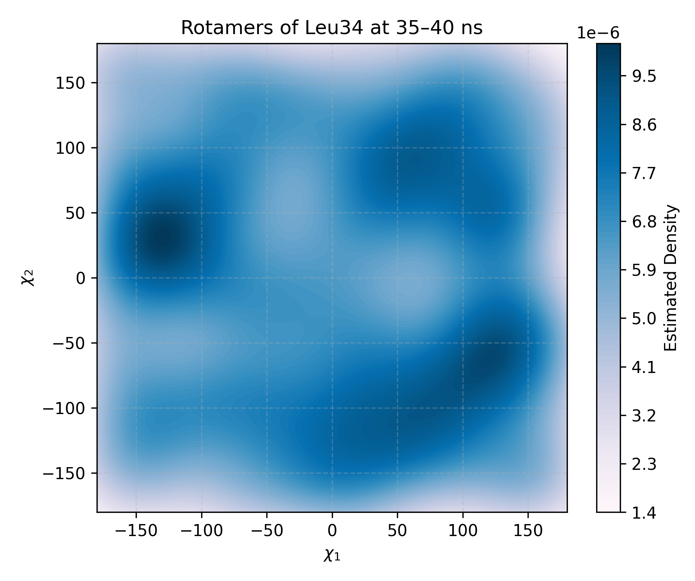
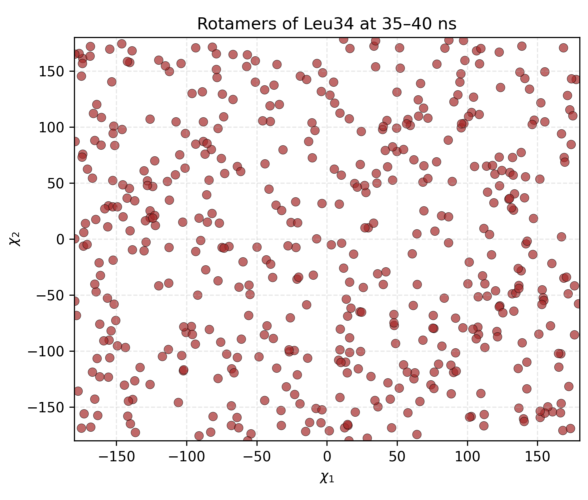
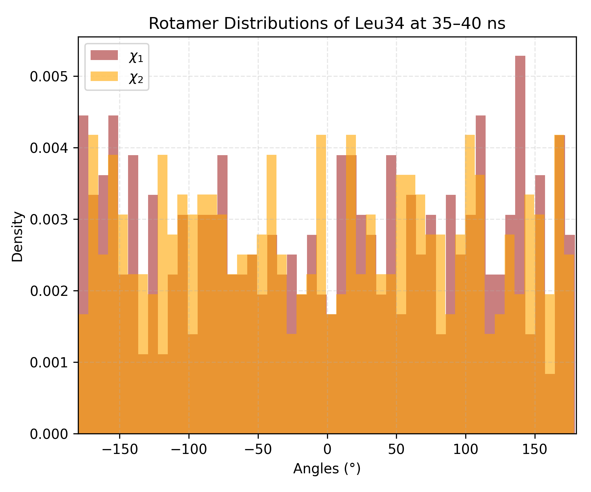

Rotamers
Overview
DynamiSpectra provides a comprehensive framework for analyzing protein side chain rotameric states by examining the Chi1 and Chi2 dihedral angles during molecular dynamics simulations. Using input .xvg files, this module calculates circular means of these angles across multiple simulation replicas, allowing robust statistical analysis of side chain conformational dynamics.
The module generates three types of plots: a 2D kernel density estimate (KDE) to visualize preferred rotamer conformations, a dotplot showing mean Chi1 versus Chi2 angles over time, and histograms displaying the distribution of individual Chi1 and Chi2 angles. This enables detailed characterization of rotamer populations, transitions, and conformational preferences critical for understanding protein function and dynamics.
Command line in GROMACS to generate .xvg files for the analysis:
gmx angle -f Simulation.xtc -n index.ndx -type dihedral -ov Simulation.xvg
Note: The atoms that define the Chi1 and Chi2 dihedral angles must be specified in the index file (.ndx) used with the gmx angle command. Ensure that the correct atom quadruplets are selected for each angle to obtain accurate rotameric data.
def dihedral_kde_and_dotplot(output_folder, chi1_files, chi2_files, config=None, time_window=None)
{kind=link}

Interpretation guidence: This 2D kernel density estimate (KDE) plot shows the distribution of Chi1 and Chi2 side-chain dihedral angles over the simulation. Darker regions correspond to higher estimated densities, indicating that those angular combinations were more frequently sampled. These high-density zones reveal preferred rotameric states adopted by the residue, while lighter areas indicate less frequent conformations. This plot provides insight into side-chain conformational preferences and flexibility during the simulation.
{kind=link}

Interpretation guidence: This plot displays the mean Chi1 and Chi2 dihedral angles over the course of the simulation or within a defined time window. Each point represents the averaged side chain conformation across multiple replicas at a given time. Clusters or patterns in the plot indicate preferred rotameric states, while dispersion suggests conformational variability. This visualization is useful for identifying dominant side chain orientations and assessing the dynamic range of rotameric transitions within the selected period.
{kind=link}

Interpretation guidence: This histogram depicts the distribution density of dihedral angles observed during the simulation or within a selected time window. Distinct peaks indicate preferred rotamer conformations, while broader or multiple peaks suggest increased conformational flexibility or transitions between states.
Complete code
import os
import numpy as np
import matplotlib.pyplot as plt
from scipy.stats import gaussian_kde
def read_angle_time_xvg(file_path):
"""
Reads a GROMACS .xvg file containing time and angle data.
Returns time and angle arrays.
"""
times = []
angles = []
with open(file_path, 'r') as f:
for line in f:
if line.startswith(('#', '@')) or line.strip() == '':
continue
try:
parts = line.strip().split()
time = float(parts[0])
angle = float(parts[1])
times.append(time)
angles.append(angle)
except (IndexError, ValueError):
continue
return np.array(times), np.array(angles)
def circular_mean_deg(angles_deg):
"""
Computes the circular mean of a set of angles (in degrees).
This is used to correctly handle periodic data such as dihedrals.
"""
angles_rad = np.deg2rad(angles_deg)
sin_sum = np.mean(np.sin(angles_rad), axis=0)
cos_sum = np.mean(np.cos(angles_rad), axis=0)
mean_angle_rad = np.arctan2(sin_sum, cos_sum)
mean_angle_deg = np.rad2deg(mean_angle_rad)
return mean_angle_deg
def mean_angles_across_replicas(file_list):
"""
Computes the circular mean angle at each time point across multiple replicas.
All trajectories are trimmed to the shortest one to ensure alignment.
"""
all_times = []
all_angles = []
for f in file_list:
times, angles = read_angle_time_xvg(f)
all_times.append(times)
all_angles.append(angles)
min_len = min(len(t) for t in all_times)
all_times_cut = [t[:min_len] for t in all_times]
all_angles_cut = [a[:min_len] for a in all_angles]
common_times = all_times_cut[0]
all_angles_arr = np.array(all_angles_cut) # shape: (replicates, timepoints)
mean_angles = circular_mean_deg(all_angles_arr)
return common_times, mean_angles
def dihedral_kde_and_dotplot(output_folder, chi1_files, chi2_files, config=None, time_window=None):
"""
Generates KDE, dotplot, and histogram plots from Chi1 and Chi2 dihedral angles.
"""
cfg = {
'figsize': (18, 5),
'kde_title': 'Chi1 vs Chi2 (KDE)',
'dot_title': 'Chi1 vs Chi2 (Dotplot)',
'hist_title': 'Distribution of Chi1 and Chi2 Angles',
'xlabel': r'$\chi_1$',
'ylabel': r'$\chi_2$',
'hist_xlabel': 'Angle (degrees)',
'hist_ylabel': 'Density',
'hist_legend_labels': ['Chi1', 'Chi2'],
'cmap': 'Oranges',
'dot_color': 'brown',
'dot_alpha': 0.7,
'chi1_color': 'blue',
'chi2_color': 'green',
'colorbar_label': 'Estimated Density',
'save_name': 'kde_dotplot_chi1_vs_chi2.png',
'levels': 100,
'bins': 50
}
if config:
cfg.update(config)
# Read and compute mean angles from replicas
times1, chi1_mean = mean_angles_across_replicas(chi1_files)
times2, chi2_mean = mean_angles_across_replicas(chi2_files)
assert np.array_equal(times1, times2), "Chi1 and Chi2 replica times do not match!"
times = times1
# Filter by time window if defined
if time_window is not None:
t_min, t_max = time_window
idxs = np.where((times >= t_min) & (times <= t_max))[0]
if len(idxs) == 0:
print("No data in the defined time window!")
return
chi1_mean = chi1_mean[idxs]
chi2_mean = chi2_mean[idxs]
# 2D KDE
values = np.vstack([chi1_mean, chi2_mean])
kernel = gaussian_kde(values, bw_method=0.3)
xgrid = np.linspace(-180, 180, 200)
ygrid = np.linspace(-180, 180, 200)
X, Y = np.meshgrid(xgrid, ygrid)
positions = np.vstack([X.ravel(), Y.ravel()])
Z = np.reshape(kernel(positions).T, X.shape)
# Plotting layout
fig, axs = plt.subplots(1, 3, figsize=cfg['figsize'])
# Panel 1: KDE Plot
kde = axs[0].contourf(X, Y, Z, levels=cfg['levels'], cmap=cfg['cmap'])
axs[0].set_title(cfg['kde_title'])
axs[0].set_xlabel(cfg['xlabel'])
axs[0].set_ylabel(cfg['ylabel'])
axs[0].set_xlim(-180, 180)
axs[0].set_ylim(-180, 180)
axs[0].grid(True, linestyle='--', alpha=0.3)
cbar = fig.colorbar(kde, ax=axs[0])
cbar.set_label(cfg['colorbar_label'])
# Panel 2: Dotplot
axs[1].scatter(chi1_mean, chi2_mean, color=cfg['dot_color'], alpha=cfg['dot_alpha'],
edgecolors='k', linewidths=0.3, s=40)
axs[1].set_title(cfg['dot_title'])
axs[1].set_xlabel(cfg['xlabel'])
axs[1].set_ylabel(cfg['ylabel'])
axs[1].set_xlim(-180, 180)
axs[1].set_ylim(-180, 180)
axs[1].grid(True, linestyle='--', alpha=0.3)
# Panel 3: Histograms
axs[2].hist(chi1_mean, bins=cfg['bins'], alpha=0.6, label=cfg['hist_legend_labels'][0],
color=cfg['chi1_color'], density=True)
axs[2].hist(chi2_mean, bins=cfg['bins'], alpha=0.6, label=cfg['hist_legend_labels'][1],
color=cfg['chi2_color'], density=True)
axs[2].set_title(cfg['hist_title'])
axs[2].set_xlabel(cfg['hist_xlabel'])
axs[2].set_ylabel(cfg['hist_ylabel'])
axs[2].legend()
axs[2].grid(True, linestyle='--', alpha=0.3)
axs[2].set_xlim(-180, 180)
# Save figure
os.makedirs(output_folder, exist_ok=True)
save_path = os.path.join(output_folder, cfg['save_name'])
plt.tight_layout()
plt.savefig(save_path, dpi=300)
plt.show()